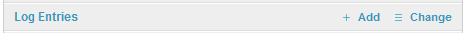
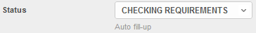
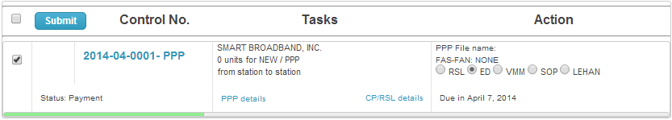

Secretary¶
About NAFD Secretary: assign by the Network and Facility Division Chief to carry out clerical task such as receiving and despensing official documents and messengerial task.
NAFD Work flow¶
ID Task Secretary 1 Checking requirements 2 Issuance of SOA 3 Payment 4 Evaluation 5 Endorsement 6 Encoding 7 Review 8 Signature 9 Chief Signature 10 Director Signature 11 Cashier Stamp 12 Release to Secretariat

Adding Log Entry¶
Adding new log can be found in Home page in the list name called Logbook.
Note
Adding entry can only be done during working days.
Important
The following fields listed below are required before creating new entry. All blurred fields can not be fill up.
Assign to field - Select from the list of personnel who is in charge of the application.
Status - Select one of the following statuses if the application has met such requirement.

- CHECKING REQUIREMENTS
has not been check for completeness by the Engr. This also means the application had not been issued a Statement of Accounts.
- ISSUANCE OF SOA
had been check for completeness by the Engr. And the client is asking for a computation of payments.
- PAYMENT
the client is currently paying the application.
- EVALUATION
when the Engineer already signed the application for acceptance matching with Record Officer control no.
- ENDORSEMENT
for endorsement to other Offices, Department or Division acknowledge by the NAFD Chief.
- ENCODING
is processed by assign encoder.
- REVIEW
is verified for correctness and accuracy of entry.
Public Telecom Entity - type Company name
Permit No - if the application contain a Permit for Purchase/Possess attachment please indicate the Permit control no.
Statement of Account - if the application contains a SOA attachments please indicate the SOA control no.
Click Save button once all information are properly supplied.
Hint
If you want to save then create new entry click Save and add another. If you want to save then continue working click Save and continue editing
{kind=link}
{kind=link}
{kind=link}
Adding O.R. Number¶
Adding new Official Receipt Number can be found in Home page in the list name called Official Receipt.
Important
Supply the information on the following relevant fields found in the Official Receipt page. All of these fields are required unless stated optional.
Public Telecom Entity - type Company name
Official Receipt - (O.R.) number stamp by Cashier in Statement of Account.
Date Paid - the date of payment.
Amount - the total amount paid in Philippine currency.
Validity from - the starting period coverage.
Validity until - the ending period coverage.
Remarks - (optional) any additional notes not qualified from other fields can be place here.
Click Save button once all information are properly supplied.
Hint
If you want to save then create new entry click Save and add another. If you want to save then continue working click Save and continue editing
{kind=link}
Adding Holiday¶
All declared holidays or no working days will not be counted when setting due date on accepted application.
Adding new Holiday or declared no work day can be found in Home page in the list name called Holiday/No work.
Important
All fields are required.
Day - set the date for Holiday or declared no work.
Time frame - choices are Half day or Whole day.
Description - Give a brief description for the set date.
Click Save button once all information are properly supplied.
Hint
If you want to save then create new entry click Save and add another. If you want to save then continue working click Save and continue editing
{kind=link}
Payment¶
The status will show up when the application started from Checking Requirements. This process will be forwarded to you after the Engineer issued a SOA.
This is a segment in work flow to create a record for Cashier Stamp. This can be found in the application. Here’s an instruction for Adding O.R. Number.
Once you are done click the check box and press submit button.

{kind=link}
{kind=link}
{kind=link}
{kind=link}
{kind=link}